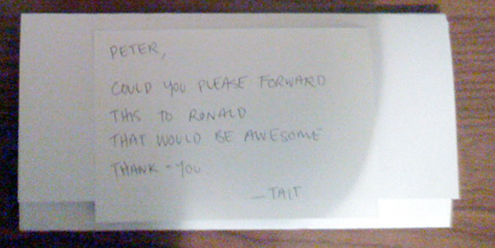
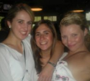

"Dear Ronald,
I love you. I really do. You’ve been like a father to me over the years and for that I think you deserve respect. Sometimes I think you’re cooler than Jesus, but even He got it wrong occasionally. I know, I know - you’re just a couple of dudes searching for meaning in a strange world. I do see the similarities between Judas and The Hamburglar for example. You think you can trust a guy and what does he do? Betrays you/steals your junior burger. That sucks.
But today I have a pickle to throw at you and I’m afraid it might stick on the window to your soul. For that I apologise, but I think you need to hear me out.
Yesterday (Sunday April 13, 2009) I was refused a Happy Meal™. I know. WTF? I was served by Jane, a man-ish looking beast from some distant planet, maybe Zorgona, or another similar moon. I was polite and asked why my age could not be accommodated. To this she replied in a deep and humiliating delivery, “aren’t you a little old, buddyyyy?”
Those words were like eye-lasers eating my mind. I’ve been eating Happy Meals™ since I was eight, and I don’t plan to stop now. I may be twenty-three, but I still have the entire set of 101 Dalmations™ toys from 1998. Doesn’t that count for something? I plan to use Pongo and Perdita on the top of my wedding cake. I don’t have a wife yet but when I do I know it will be a Happy Day™. As you can see, Happy Meals™ are a big part of my identity, so I hope you can appreciate how upset this made me.
I did some research on the interweb and found that in 2004 you invented a Happy Meal™ for adults named Go Active!™ I’m glad I never saw one of these because it confuses me. Why would an adult want a Happy Meal™ that tells me what I should be doing? I want to be happy, not active. And no toy? At least you could have made the pedometer look like, I don’t know, Krang from the Ninja Turtles or something. I hope this was a funny joke. If it was, I was pleasantly amused.
Sorry Ronald, I just thought you should know what happened and I didn’t know who else to tell. Maybe you could send me some coupons. If not, I am missing the ‘Gonzo’ Happy Meal™ toy from the popular 1996 film Muppet Treasure Island. He’s tied to a mast and has a pink crayon box. I was in hospital at the time and they didn’t have McDonalds.
Oh, and fire Jane. She works at Mooroolbark McDonalds and looks like a man. You’ll know her when you see her.
Yours truly,
Tait Ischia"
I sent it in the mail to a Mr. Peter Bush, the CEO of McDonalds Australia. I thought that he'd have to know Ronald personally, seeing as he runs the business and all.
So to make sure Mr. Bush passed it on, I left a small note inside the envelope along with the letter.

Just today I got a response. Not from Ronald, but from Laura Aubusson, the Customer Service Coordinator at McDonalds Australia.
I thought maybe Ms. Aubusson is a pseudonym Ronald uses when speaking to his fanbase. Because that way he'd get less return mail. And he could relate 'one-on-one' with his followers.
So I looked the name up on Facebook. I don't know which one she is but none look like Ronald. How disappointing.

Click on the image of the letter below to read the response.
If anyone knows how I could get the ‘Gonzo’ Happy Meal™ toy tied to a mast with a pink crayon box, please let me know at t@taitischia.com. I will trade you one of my doubles.
{kind=link}